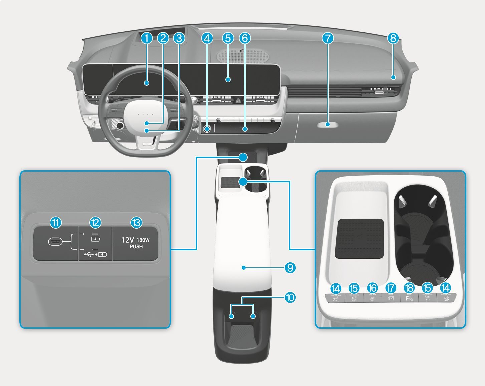

대시보드 및 중앙 콘솔

1C_CenterInsideVehicleOverview
- 클러스터 클러스터에 표시되는 정보
- 경음기 경음기 사용하기
- 운전석 에어백 운전석 에어백
- 시동 버튼 비상 상황 경고하기
- 인포테인먼트 시스템 인포테인먼트 시스템
- 히터 및 에어컨 히터와 에어컨(자동 조절식)
- 글러브 박스 글러브 박스
- 동승석 에어백 동승석 에어백
- 중앙 콘솔 중앙 콘솔 보관함
- USB 충전 단자(뒷좌석) USB 충전 단자(C 타입)
- USB 단자 USB 충전 단자(C 타입), USB 단자
- USB 단자 기능 전환 버튼 USB 단자
- 다용도 소켓 다용도 소켓
- 통풍 시트 버튼 앞좌석 통풍 시트
- 열선 시트 버튼 열선 시트
- 스티어링 휠 열선 버튼 스티어링 휠 열선 사용하기
- 주차/뷰 버튼 후방 모니터 작동
- 주차 안전 버튼 주차 거리 경고 작동